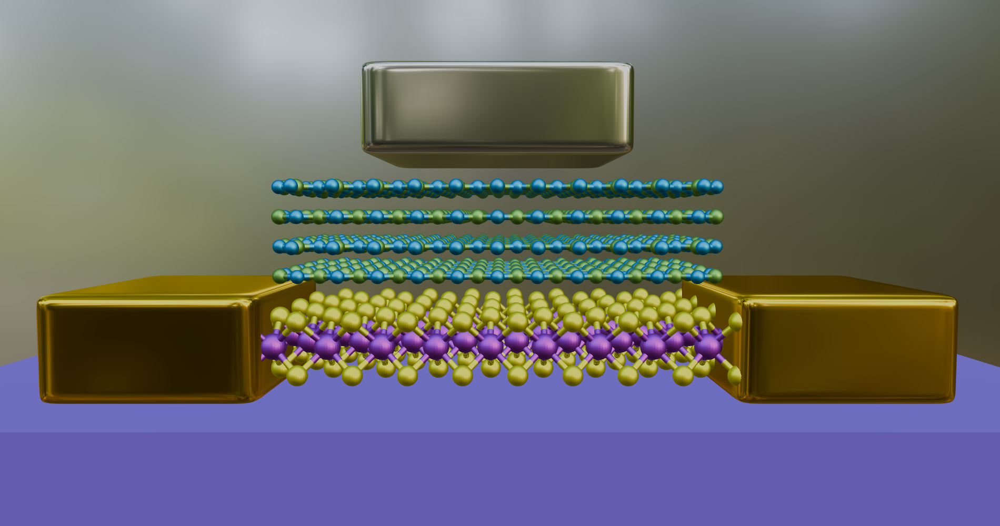

ACS Nano · 2025
Low-voltage MoS₂ transistors
Abstract — summary
A 4 nm hBN gate dielectric and platinum electrode enable MoS₂ transistors with a threshold voltage of 0.46 V and an ON/OFF current ratio above 10⁵. Low gate leakage and continued operation after 1,000 switching cycles demonstrate the potential of ultrathin hBN for nanoscale transistors.
Read paper